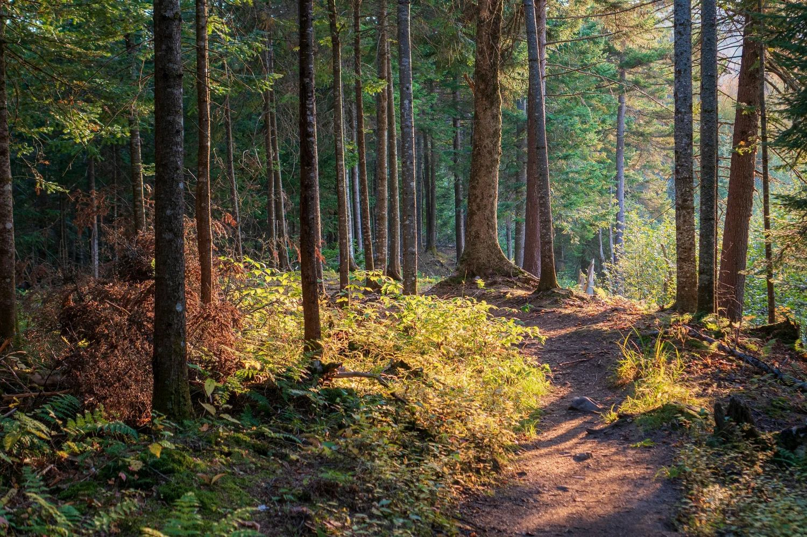
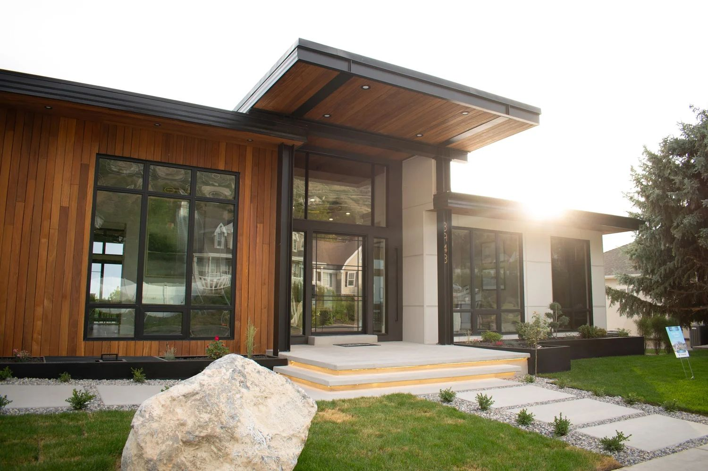
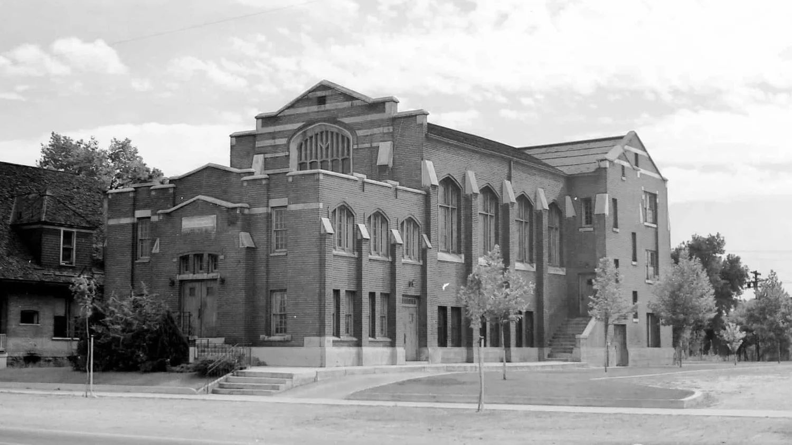

Field
Journal
Stories from our projects, our community and the people behind the work.
All stories
- CommunityDec 17, 20252 min readKnighton Before Christmas: A Gingerbread-Building Charity Event Supporting HomeAid UtahKnighton Architecture, alongside our partners and community, proudly hosted The Knighton Before Christmas, a festive gingerbread-building charity…

ProjectsAug 21, 20252 min readValley View: A Modern Showcase in the Utah Valley Parade of HomesKnighton Architecture, in collaboration with 10X Construction, is proud to present Valley View, a residence featured in the Utah Valley Parade of…
PreservationAug 21, 20252 min readRestoring the Fifth Ward Chapel: Reviving a Salt Lake City LandmarkThe Fifth Ward Chapel, also known as the Fifth Ward Meetinghouse, has stood at 740 South 300 West in Salt Lake City, Utah since 1910. Designed by the…
No stories here yet.
Begin now
Have a project in mind?
Every story here started with a conversation. Tell us about yours.
Begin your new project here